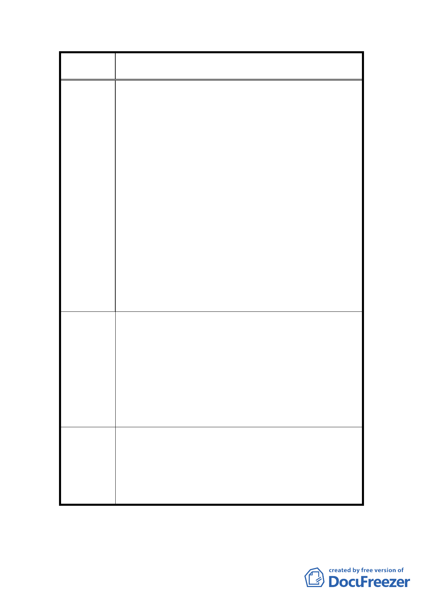

案
名
變更臺北市士林區三玉段一小段 22-3 地號等體育場用
地（天母運動公園）為臺北市立體育學用地主要計畫案
轉利用中山足球場之土地較妥。
2.96 年 1 月 29 日（07）天權字第 0129-1 號函：
（1）經本會理監事第一屆第二次全體會議（96 年 1 月
27 日）議決，堅決反對將現有「天母運動公園（士
林區三玉段一小段 22-3 等地號）」違反原徵收目的
變更為臺北市立體育學院校地。
（2）士林天母地區市民支持體育活動，也支持 2009 聽
障奧運會在天母運動公園舉行，此亦符合運動公園
設立之功能，但所有建築物必須通過環境影響評估
並考量沼澤地之適合性。
（3）為考量體育教育長期發展，我們全力支持並建議臺
北市政府同意且協助臺北市立體育學院與兩所體
育學院合併成立國立體育綜合大學，除符合臺北市
立體育學院師生期望外，並一舉解決校地覓地不易
的問題。
（4）現有臺北市立體育學院違法新建之校舍及為聽障奧
運會興建之體育設施，未來可作為加強天母運動公園
之功能或臺北市民其他社區活動用途。
1.公元 2006 年 10 月 25 日（06）天權字第 1025-1 號函
（中華郵政郵寄郵戳日期為 95 年 12 月 26 日）：
請專案小組暫緩審查「變更天母運動公園為台北體院
校地計畫案」，等市議會開議後，就本案進行詳實討論
建 議 辦 法 並表示同意後，再續行審查。
2.公元 2007 年元月 29 日（07）天權字第 0129-1 號函：
本會堅決反對臺北市政府將「天母運動公園（臺北市
士林區三玉段一小段 22-3 等地號）」變更為「臺北市
立體育學院用地」。
1.依都市計畫法第七十四條及第十九條規定，審議都市
計畫係為都市計畫委員會之職責，本案申請單位提送
委 員 會 決 資料到會，本會依法應進行審查。至本案有關土地管
議 理機關之移轉、環境影響評估等作業程序，仍應由申
請單位依現行法令辦理。
2.有關反對本變更案之意見，決議同編號 1。
討論事項 三
20